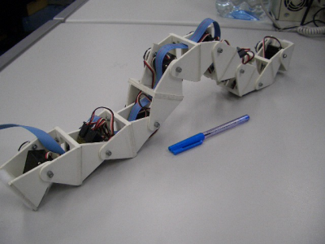
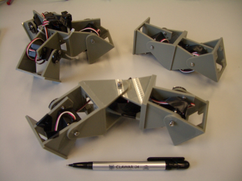
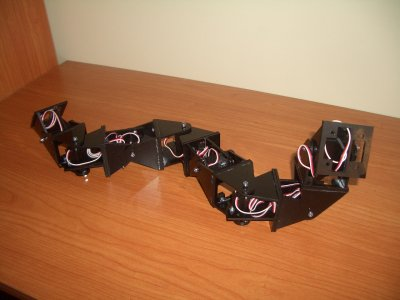

This work is licensed
under a Creative
Commons Attribution-ShareAlike 2.5 Spain License.
This work is licensed
under a Creative
Commons Attribution-ShareAlike 2.5 Spain License.
|
"Robótica Modular y Locomoción: Robots Cube Revolutions y Multicube”. Universidad Rey Juan Carlos. Madrid. Enero 2006 |
|
 |
 |
Título: “Robótica Modular y Locomoción: Robots Cube Revolutions y Multicube”
Duración: 1 hora
Evento: Curso de doctorado de Robótica. URJC.
Organiza: Vicente Matellán y José María Cañas
Lugar: Salón de actos. Edificio departamental II.
Fecha: 19 de Enero de 2006
Ponente: Juan González Gómez (Escuela Politécnica Superior, UAM)
La robótica modular es un área de investigación reciente cuyo objetivo es la construcción de robots a partir de módulos más sencillos y el estudio de sus propiedades. Uno de los robots modulares más avanzados es Polybot, diseñado en el PARC (Palo Alto Research Center).
En la primera parte de esta charla, se hace una breve introducción a la robótica modular y se muestran las diferentes generaciones de Polybot. A continuación se presentan los módulos Y1, desarrollados por nosotros, que están inspirados en la primera generación de Polybot. Se trata de unos módulos muy sencillos, con los que se pueden crear diferentes configuraciones de robots. Además, son libres, lo que permite a los investigadores tener acceso a sus planos para estudiarlos, modificarlos o distribuirlos.
En la segunda parte se presenta el robot Cube Revolutions, un robot de tipo gusano creado mediante la unión de ocho módulos Y1 en cadena. Se explicará el algoritmo empleado para conseguir su locomoción, que se basa en la propagación de ondas que recorren su cuerpo desde la cola hasta la cabeza. Este tipo de robots, además, tienen la propiedad de poder adoptar diferentes formas. Durante la charla se realizará una demostración en vivo.
Por último se aborda el problema de las configuraciones mínimas: determinar el mínimo número necesario de módulos para conseguir locomoción en una y dos dimensiones. Se han creado tres configuraciones diferentes, englobadas bajo el nombre de Multicube. Se explicarán los mecanismos de coordinación empleados para realizar diferentes movimientos: desplazamiento en línea recta, en arco, desplazamiento lateral y rotación. Se harán también demostraciones en vivo
Durante la charla se realizaron demostraciones en vivo de los robots Cube Revolutions y Multicube. Y se enseñó en primicia la primera versión del robot Hypercube, aunque sólo la estructura, que se acababa de crear. Todavía no se mueve. Está constituido por 8 módulos Y1 conectados en desfase: 4 se mueven paralelos al suelo y 4 perpendicularmente.
|
 |
|
Descarga de la presentación |
|
robotica-modular-urjc-2006.pdf (2,8 MB) |
Presentación en PDF |
|
robotica-modular-urjc-2006.sxi (4,2 MB) |
Presentación para OpenOffice 1.1.3 |
|
|
Robot Cube Revolutions
Información sobre los módulos Y1
Artículo presentado en el Clawar 2005, sobre Multicube: “Motion of Minimal Configurations of a Modular Robot: Sinusoidal, Lateral Rolling and Lateral Shift”
Artículo presentado en el Clawar 2004, sobre Cube Revolutions: “Locomotion of a Modular Worm-like Robot using a FPGA-based embeded MicroBlaze Soft-processor”
Artículo presentado en el JCRA 2004, sobre Cube Revolutions: “Locomoción de un Robot Ápodo Modular con el Procesador MicroBlaze”
Cube Reloaded, versión anterior de Cube Revolutions.
“Diseño de Robots ápodos”, trabajo de iniciación a la investigación. Junio 2003.
Cube 2.0, versión inicial, anterior a Cube Reloaded
A Vicente Matellán y José María Cañas por invitarme a compartir con ellos mis investigaciones. ¡Muchísimas gracias!
07/Feb/2006: Añadida foto de Hypercube
31/Enero/2006: Publicada información en esta web